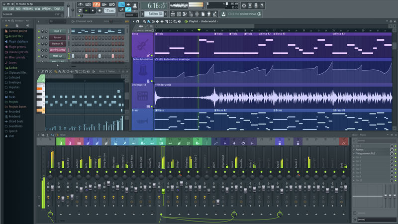

Menu:
Over mij
Familie
Muziek
Hobby's
Ik hou van muziek maken en luisteren, ik doe dit namelijk ook iedere dag.

Ik kijk ook heel veel films en series, voornamelijk Star Wars.
Ik game af en toe wanneer ik er tijd voor heb, en dan speel ik spellen zoals Zelda of Okami.